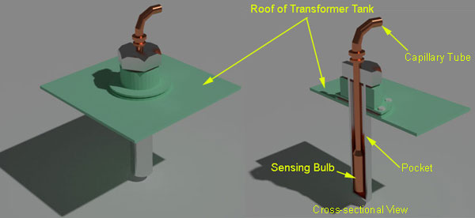

Oil Winding and Remote Temperature Indicator of Transformer
Types of Temperature Indicator
Construction
Oil Temperature Indicator
• Operating Principle
Winding Temperature Indicator
• Operating Principle
Remote Temperature Indicator
These are generally precision instruments. A temperature indicator of power transformer is specially designed for protection of transformer in addition to its temperature indication and cooling control features. That means, this device performs three functions
1) These instruments indicate instantaneous temperature of oil and windings of transformer.
2) These also record maximum temperature rise of oil and windings.
3) These instruments operate high temperature alarm at a predetermined value of allowable temperature limit.
4) Temperature indicators of transformer can also trip the circuit breakers associated with the power transformer when the temperature of oil or winding reaches a predetermined limit.
5) These devices also control the cooling system of transformer. Switch on the cooling equipment when the winding attains a preset high temperature and switch it off when the temperature drops by an established differential.
There are mainly two types of temperature indicators used in transformer. Principally both of the instruments are the same but, one is used for oil temperature and the other is used for winding temperature. There is another type of temperature indicator often used in power transformer, which is little bit different principally and this is remote temperature indicator.
The types of temperature indicator of transformer are
1) Oil temperature indicator (OTI)
2) Winding temperature indicator (WTI)
3) Remote temperature indicator (RTI)
These indicators are provided with a sensing bulb. This sensing bulb is placed in a pocket on the roof of transformer tank. The pocket is filled with transformer oil. The bulb is connected to the instrument housing by means of flexible connecting tubing consisting of two capillary tubes. One capillary tube is connected to the operating bellow of the instrument and other to a compensating bellow. Compensating bellow compensates variation of ambient temperature. The pointer is fixed with a steel carriage on which normally four mercury switches are mounted. The make and break temperature of these mercury switches can be adjusted separately. One mercury switch is use to operate cooling fans, one mercury switch is used to switch on oil pumps, one mercury switch is for high temperature alarm and last switch is used to inter trip the transformer in extremely high temperature condition. In addition to these the dial of oil temperature indicator is also provided with dummy pointer which is pushed by main pointer when temperature rises. When main pointer moves back due to decreasing temperature, the dummy pointer stays at maximum temperature position of the main pointer. This indicates maximum temperature rise of transformer during a preset period of time.

This device is used to measure the top oil temperature. An oil temperature indicator or OTI is also used for protection of transformer.
This device measures top oil temperature with the help of sensing bulb immersed in the pocket by using liquid expansion in the bulb through a capillary line to operating mechanism. A link and lever mechanism amplifies this movement to the disc carrying pointer and mercury switches. When volume of the liquid in operating mechanism changes, the bellow attached to end of capillary tube expands and contracts. This movement of bellow is transmitted to the pointer in temperature indicator of transformer through a lever linkage mechanism.
This device measures the LV and HV winding temperature. A winding temperature indicator or WTI is also used as protection of transformer.
Winding Temperature Indicator
The basic operating principle of WTI is same as OTI. But only difference is that the sensing bulb pocket on transformer top cover is heated by a heater coil surrounded it. This heater coil is fed by secondary of current transformers associated with transformer winding. Hence the electric current through the heater coil is directly proportional to the electric current flowing through transformer winding. This is because there is no scope of direct measuring of temperature inside a winding. When load of transformer increases, the winding temperature is also increased and this increased temperature is sensed by sensing bulb as the heater coil surrounds it. Rest of the working principle of winding temperature indicator is same as principle of oil temperature indicator.
A precision potentiometer mounted inside the instrument case functions as a transmitter and operates an electrical repeater for remote reading of measured temperature. In one scheme the transmitter is directly connected to the repeaters and alternative scheme is to connect the transmitter to a resistance transducer, which will supply direct electric current for operating repeater.
Design with  by SARU TECH
by SARU TECH
www.sarutech.com
Content Credited to electrical4u.com
Online Electrical Engineering Study Site